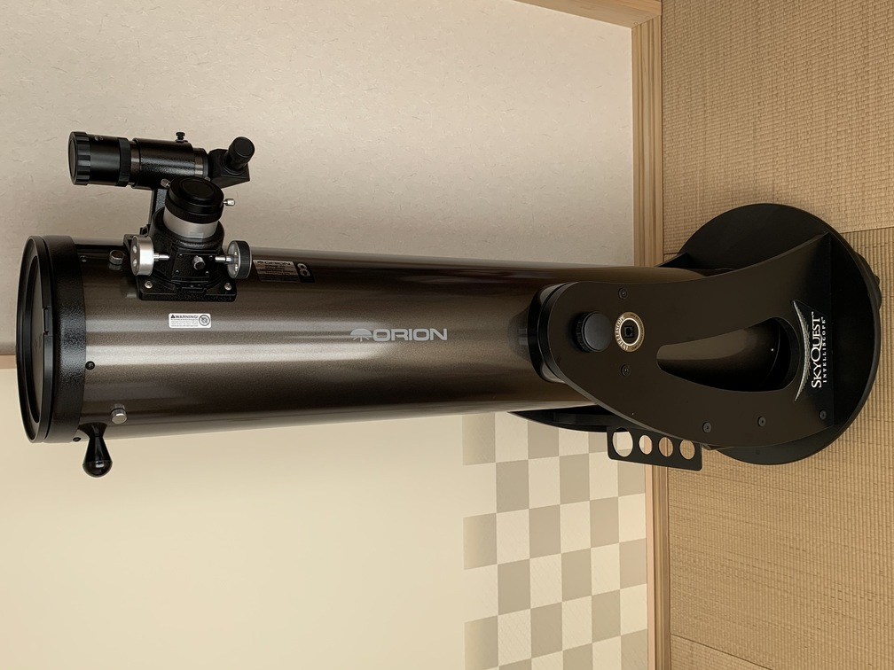

Dobsonian Telescope
While most people are getting ready to go to bed, there is a small group of people that, weather permitting, are heading out. It may be to their backyard or a remote location far away from the glow of urban sprawl. We are amateur astronomers, always looking up toward the night sky and never wanting to waste a perfect night for observing.
As early as I can remember, I was always looking up, wondering what was out there. I got my first telescope when I was in fourth grade and enjoyed looking at the easier targets out there like Jupiter and the Orion Nebula. Even on the clearest of nights, my telescope was never powerful enough to see much more. When I was old enough and could afford it, I finally bought a quality telescope. Wanting to make a practical purchase, I went for an 8 inch Dobsonian reflector. I wasn’t interested in taking pictures of what I was observing, so the fact that a Dobsonian lacked a motorized drive for tracking was not a concern. However, as time passed, I did want to try.
I did some research and found you can build a motorized mount that can track up to one hour before it needs to be reset, but I lacked a lot of the power tools to build one. Getting a custom one made for your latitude (yes, that matters) is expensive, ranging from $400 to $1,300. So, I did the next best thing I found in my research. I modified a web can to fit into the eyepiece holder and took video of what I was observing. Because of the limitations of such cameras, my targets were limited to the planets. I then stacked the hundreds of video frames of the subject on top of each other using free software. Below are some of the images I was able to get.
Even if your telescope lacks the bells and whistles to track objects, you can still take great images with a modified webcam and some stacking software. Here’s to clear skies and great viewing!
Stacked Images
Mars
Mars
Jupiter